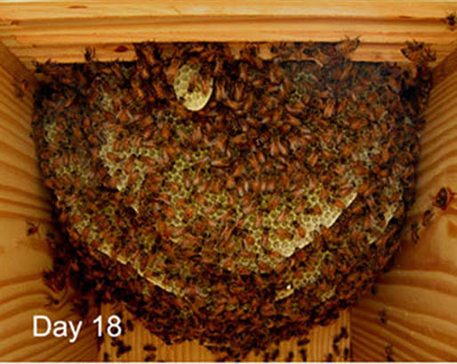

Honey Color Guide | Toolbox | Swarm Catcher | Local Pollinator Photos | Videos | Warré Hive Entrance Modifications | Contact
Frankenhive
"After having formed this determination, and having spent some months in successfully collecting and arranging my materials, I began."
"The moon gazed on my midnight labours, while, with unrelaxed and breathless eagerness, I pursued nature to her hiding-places."
"The summer months passed while I was thus engaged, heart and soul, in one pursuit."
"Winter, spring, and summer passed away during my labours; but I did not watch the blossom or the expanding leaves -- sights which before always yielded me supreme delight -- so deeply was I engrossed in my occupation."
"The leaves of that year had withered before my work drew near to a close; and now every day showed me more plainly how well I had succeeded."
― Mary Shelley, Frankenstein (1818)
The Frankenhive can contain up to three separate colonies. Each colony can be managed separately as a simple horizontal top-bar hive or supered with Warré hive boxes.
Features
Floor: Flat, 38 mm thick
Entrance: Multiple side and end entrances as desired, each a combination of 19 mm diameter entrance holes, #9 tapered natural cork plugs
Hive-Body Box: Variable size, maximum W 28 x H 35 x L 99 cm internal dimensions, adjustable follower boards, 38 mm thick exterior walls
Comb Support: Removable top-bars with 9 mm bee space
Comb Spacing: Variable on-center spacing, 32 mm in the brood nest and 38 mm in the honey storage areas
Comb Height: Uninterrupted to 35 cm in hive-body box
Cover: Coarse cloth on top-bars, wood edged quilt boxes containing natural insulating material retained with coarse cloth
Roof: Gabled roof with ventilated cavity
Management: Horizontal and vertical, "Nestduftwärmebindung" retained within the brood nest
Wintering: Flexible size
Harvest: Raw, cut comb and strained




This site is licensed under a Creative Commons
Attribution-NonCommercial-ShareAlike 3.0 Unported License.
Updated 18 February 2010 | eccentric beekeeper